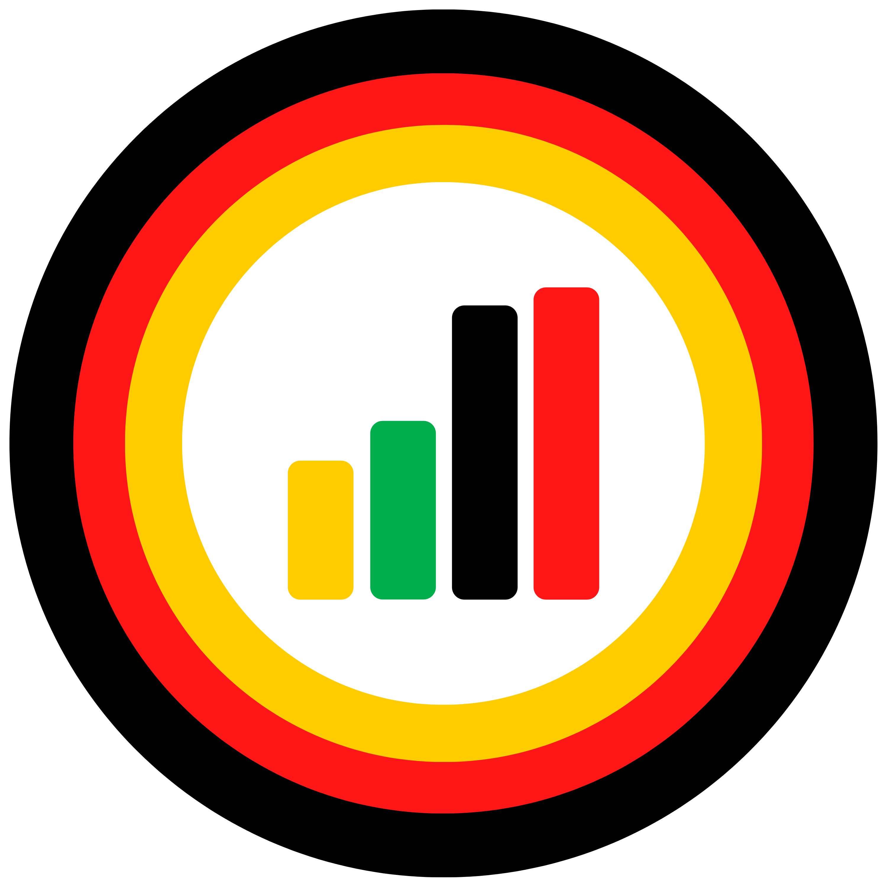

2021 German Election
Welcome!
Wilkommen!
Welcome to the ElectionsGermany website! This website will hopefully help you gain a deeper understanding of Elections and Politics in Germany. If you are just here to check out the previous election results in Germany, navigate to the "Elections" tab and check them out.
Purpouse
ElectionsGermany provides clarification and description when it comes to politics and elections in Germany. Under the "German Politics" tab you will be able to find explanations of different political parties and voter groups in Germany, as well as some background information to the current political climate in Germany. ElectionsGermany also provides a designated "Credits" because it is felt that it is nescessary to give credit to those who provided a lot of insipration and source material for the project.
About
This Project was created as a way to learn how to build a website and how to expand my knowledge of coding languages, this was especially important when creating the interactive visualisations for the elections. The website is currently hosted from my GitHub repository because it is free, however this limits some of the functions of the website. The motivation and inspiration for me to create this came long before I had started this, however at the time I had no idea how to code such a thing, I wanted to create somewhere where you could reliably get information and data about German elections. I also wanted to provide cool and interactive graphics, similar to those you see of British or US elections but for Germany.
2021 Bundestagswahl
On September 26th, 2021 Germany held a parliamentary election for its 20th Bundestag (since 1949). The results were a moderate victory for the Social Democratic Party and the worst result for the CDU/CSU coalition ever. As of now (ca. October 2021), talks for a possible moderate–left "Trafficlight Coalition" are taking place. ElectionsGermany provides detailed results for the Elections in the forms of maps, graphs and much visualisations! [more]
Thank you for your time, and enjoy!